Six proven patterns for building LLM-controlled coding pipelines.

A central orchestrator routes tasks to specialized worker agents. The orchestrator decides which agent handles each task based on the task type and agent capabilities.
✓ Pros: Simple to implement, clear separation of concerns, easy to scale horizontally
✗ Cons: Single point of failure (orchestrator), may become bottleneck
Best for: Most multi-agent systems, especially when starting out
OpenCode Implementation:
// opencode.json orchestrator config
{
"agents": {
"orchestrator": {
"model": "anthropic/claude-sonnet-4-20250514",
"tools": ["task_delegation", "progress_tracking"],
"rules": ["route_to_specialist", "monitor_quality"]
},
"backend": { "specializes": ["api", "database", "server"] },
"frontend": { "specializes": ["ui", "css", "components"] },
"reviewer": { "specializes": ["code_review", "security"] }
}
}Tasks flow through a linear sequence of agents. Each agent processes the task and passes it to the next stage. This is the classic software development lifecycle.
✓ Pros: Predictable flow, easy to monitor, clear quality gates at each stage
✗ Cons: Slow (sequential), no parallelism, one failure blocks everything
Best for: Code review pipelines, CI/CD workflows, document generation

A task is split into subtasks, executed in parallel by multiple workers, then results are merged. This maximizes throughput for independent subtasks.
✓ Pros: Maximum parallelism, fast execution, good for batch processing
✗ Cons: Complex coordination, result merging can be tricky, requires independent subtasks
Best for: Running multiple tests, parallel code generation, batch analysis

Tasks are prioritized and executed in order. Failed tasks are re-queued with exponential backoff. This creates a continuous, self-healing work loop.
✓ Pros: Never stops, self-healing, priority-aware, handles failures gracefully
✗ Cons: Can starve low-priority tasks, requires careful priority management
Best for: Continuous coding pipelines, never-stopping agents, production systems

Based on SICA and Self-Harness papers. The agent executes tasks, analyzes its performance, and improves itself. This creates a recursive improvement loop.
✓ Pros: Continuous improvement, compound gains, adapts to new challenges
✗ Cons: Can degrade if improvement criteria are wrong, requires safety checks
Best for: Long-running systems that need to adapt and improve over time
Implementation Reference: SICA paper (2025) and Self-Harness (2026)

Tasks are driven by formal specifications. The system generates code that must satisfy the spec, then verifies compliance. This is the most rigorous approach.
✓ Pros: Highest quality, formally verified, production-ready output
✗ Cons: Slow, requires formal specs, not all tasks can be formally specified
Best for: Safety-critical systems, financial code, medical software
| Pattern | Complexity | Best For |
|---|---|---|
| Orchestrator-Worker | Low-Medium | General multi-agent systems |
| Pipeline | Low | Sequential workflows |
| Fan-Out/Fan-In | Medium | Parallel processing |
| Priority Queue Loop | Medium | Continuous operation |
| Self-Improving Loop | High | Adaptive systems |
| Spec-Driven | High | Safety-critical systems |
For our OpenCode multi-agent system, we recommend combining patterns: